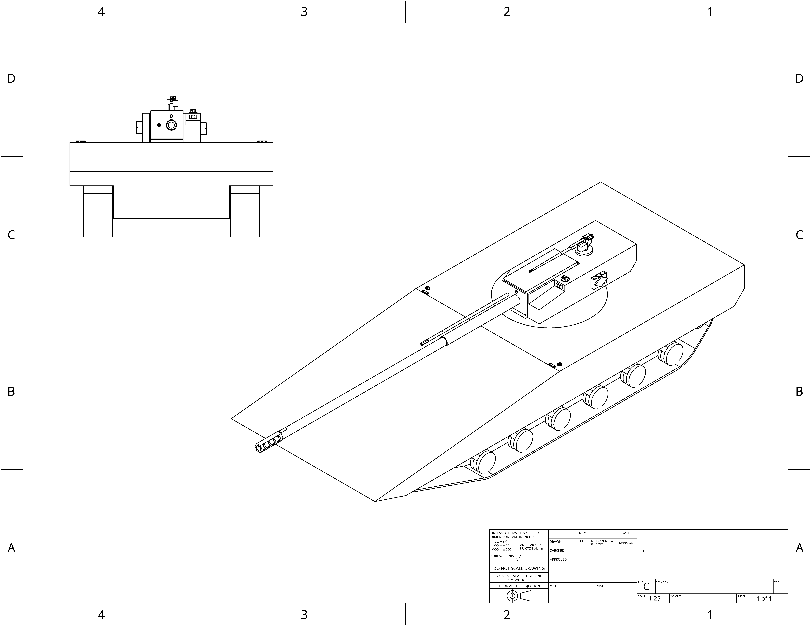

Armed with a 105mm electrochemicalthermal smoothbore cannon, 25mm coaxial chaingun and a roof mounted .50 caliber machine gun, the UCSC main battle tank weighs only 38 metric tons. This is due to the advanced carbyne based composites that make up its armor as well as its exeptionally light weight active protection system.
